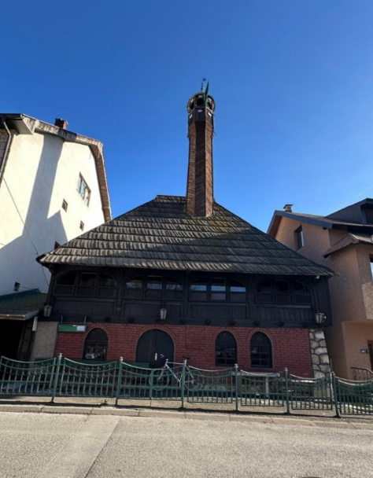
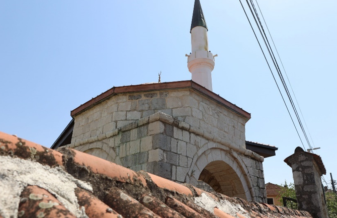

Džamije predstavljaju najprepoznatljivije islamske vjerske objekte u Crnoj Gori, ali njihov značaj daleko prevazilazi isključivo religijsku funkciju. U okviru ciljeva ovog projekta, posebno ističemo i njihov kulturološki potencijal , koji postaje sve značajniji u savremenim tokovima kulturnog i vjerskog aspekta. Najstarije džamije na teritoriji Crne Gore datiraju još iz perioda osmanske vladavine, a mnoge od njih su sačuvane do današnjih dana, ponosno svjedočeći o slojevitom istorijskom i kulturnom nasljeđu ove regije. Među njima se posebno izdvaja džamija u Baru iz 16. vijeka, koja se smatra jednim od najljepših primjera osmanske arhitekture u Crnoj Gori. Osim što i dalje aktivno služe svojoj vjerskoj svrsi, ove džamije su ujedno i dragocjeni istorijski spomenici. Njihova bogato ukrašena unutrašnjost, sa detaljno izrađenim mihrabima, minberima, vitražima i pažljivo uređenim dvorištima, čini ih izuzetno privlačnim za posjetioce. Kao takve, one zauzimaju važno mjesto u okviru turističke ponude Crne Gore, bilo da je riječ o organizovanim turama, kulturnim posjetama ili samostalnim obilascima.
Pocetna Jedan od najlepših primjera je i Džamija u Rožajama, koja je karakteristična po svojoj monumentalnoj arhitekturi i ukrasima koji prikazuju osmanski uticaj. Džamija u Nikšiću, koja datira iz 17. vijeka, takođe je važna atrakcija, a njeno prisustvo u srcu grada podsjeća na duge godine osmanske vladavine. Takođe, i džamije u Podgorici i na Bihoru privlače brojne turiste, ne samo iz vjerskih razloga, već i kao kulturno-istorijski I turistički objekti.
Članak nastao u okviru projekta "Savremenizacija kulturne baštine Bošnjaka Crne Gore" autorice Selvire Pepić
Osmanagića džamija u Podgorici predstavlja jedan od najznačajnijih spomenika islamske kulture i duhovnosti Bošnjaka u Crnoj Gori. Smještena u samom centru glavnog grada, ova džamija nije samo mjesto molitve, već i simbol identiteta, tradicije i bogate historije bošnjačke zajednice. Izgrađena u osmanskom stilu, Osmanagića džamija odražava arhitektonske karakteristike koje su prepoznatljive širom Balkana, sa pažljivo oblikovanim minaretom, ukrašenim mihrabom i prostranim prostorom za vjernike. Tokom decenija, ona je bila centar vjerskog, kulturnog i društvenog života Bošnjaka u Podgorici, igrajući ključnu ulogu u očuvanju vjerskih običaja i tradicije. Projekat "Savremenizacija kulturne baštine Bošnjaka Crne Gore", koji vodi Selvira Pepić, ima za cilj da unaprijedi vidljivost i očuvanje ovakvih važnih kulturnih objekata. Kroz edukativne aktivnosti, promociju kulturnog nasljeđa i podršku zajednicama, projekat nastoji da osnaži identitet Bošnjaka i doprinese njihovoj ravnopravnoj integraciji u društvo. Osmanagića džamija je, kao dio ovog kulturnog mozaika, važan podsjetnik na višestoljetnu prisutnost Bošnjaka u Crnoj Gori, kao i na njihovu bogatu tradiciju koja je doprinijela raznolikosti i jedinstvu zemlje. Očuvanje i valorizacija ovakvih spomenika predstavlja korak ka boljem razumijevanju i poštovanju među narodima, te ka izgradnji društva koje slavi svoju multietničku i multikulturalnu prirodu.